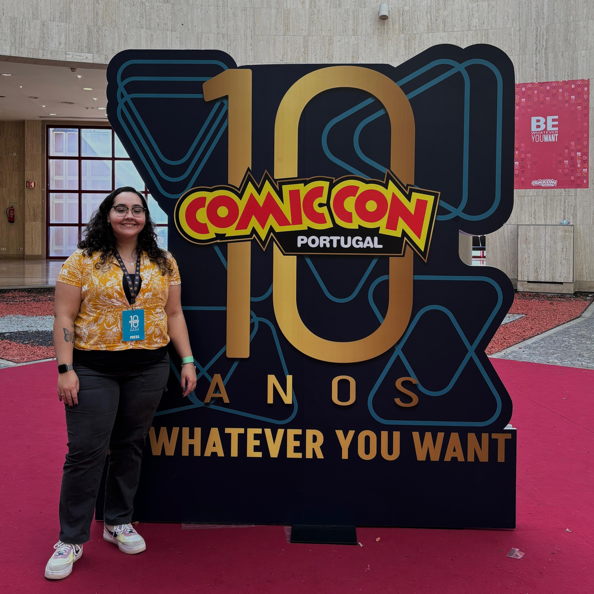

Isabela Andrade
Uma Comunicadora
Explora o meu percurso na… Comunicação Estratégica, Jornalismo e Marketing.
Download CV🖥️
Isabela Andrade — Portfolio
Este site foi desenhado como uma interface Windows 95.
Por favor acede num ecrã maior para a experiência completa.
Uma Comunicadora
Explora o meu percurso na… Comunicação Estratégica, Jornalismo e Marketing.
Download CVAqui estão alguns dos meus trabalhos notáveis
Playlist no Spotify com programas que realizei enquanto Chefe de Redação, Gestora de Mídias Digitais e Locutora: programas de informação, improvisação e entretenimento.
Realizei a cobertura da ComicCon como Imprensa em 2024. Acompanhei coletivas de imprensa com artistas convidados internacionais, fiz entrevistas e cobertura para as redes sociais da Rádio Sintoniza-te.

Durante dois meses de estágio curricular na Rádio Antena Minho participei na programação, noticiário, reportagens e agendas culturais.
X – Fairplay / Sintoniza*te: gestão de equipa de mídias sociais, posts informativos e interativos.
X – Tracklist: Coordenadora de Social Media, notícias de entretenimento e publicidades com marcas.
Blitz Bikes: estagiária de Marketing — email marketing, atualizações no website e posts para redes sociais.
Responsável por criar do zero uma presença nas redes sociais, compor website, gerir clientes e contas e administrar GoogleAds (SEO) em 3 empresas do grupo.
Fiz parte da equipa do CreateLab — Unidade de Experimentação e Inovação. Na Agência Criativa, aprofundei os meus conhecimentos estratégicos e comunicativos, respondendo às necessidades da Comunicação.
Considerações, aprendizados, análises e trabalhos realizados ao longo do estágio curricular.
Análise das eras e discografia da cantora, conhecida por criar uma narrativa visual repleta de referências culturais e sociais.
Olá, eu sou a Isabela Andrade, uma comunicadora e apaixonada pela área.
Desde tenra idade, eu sempre simpatizei com a Comunicação. Quando mais velha, tinha a certeza de que era isso que eu queria seguir como carreira profissional.
Na minha visão, a Comunicação tem o poder de mudar vidas e, junto da investigação, criatividade e planeamento estratégico, ela torna-se uma ferramenta muito poderosa. Minha intenção, no presente e futuro, é continuar a estudar cada vez mais porque acredito que, com a constante transformação do mundo contemporâneo, se pararmos, perdemos oportunidades de tornarmos alguém melhor.
Finalizei o Ensino Secundário no Instituto Nossa Senhora da Piedade II, no Rio de Janeiro (Brasil). Em seguida, ingressei no curso de Comunicação Social na Pontifícia Universidade Católica do Rio de Janeiro (PUC-Rio), onde fiz dois anos de curso e pedi transferência para a Universidade Católica Portuguesa — Centro Regional de Braga, onde conclui a minha licenciatura em Ciências da Comunicação e fui Chefe de Redação, Gestora de Mídias Digitais e Locutora da Rádio Sintoniza-te.
Após a licenciatura, ingressei no Mestrado em Comunicação Estratégica na Universidade do Minho em 2025 e pretendo continuar a estudar e especializar-me cada vez mais na área da Comunicação.
No meu tempo livre, gosto de explorar a fotografia como forma de expressão criativa e observação do mundo à minha volta. Utilizo tanto o telemóvel como uma câmera analógica para captar momentos, detalhes e diferentes perspetivas, desenvolvendo constantemente o meu olhar artístico e a sensibilidade visual.
A música também ocupa um lugar muito importante na minha vida. Durante a pandemia da Covid-19, aprendi a tocar violão de forma autodidata, experiência que despertou ainda mais a minha criatividade e que, desde então, tornou-se um dos meus hobbies favoritos. Tenho grande interesse por novas tendências musicais, tecnologia e lançamentos ligados ao universo do entretenimento como mundo pop e videojogos.
Além disso, sou entusiasta do universo Pokémon TCG. Gosto de colecionar e jogar cartas estratégicas, atividade que estimula o pensamento analítico e o convívio social.
Viajar, descobrir novos lugares, viver diferentes experiências e poder contá-las também fazem igualmente parte das minhas maiores paixões pessoais.
Seleciona um tema de cores: